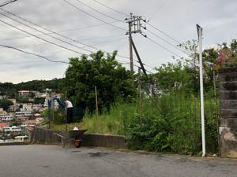

うるがいの話 ある日
最新: 畑を耕す人
うるがいとは 前提知識です
カニの画像をクリックすると『うるがいの話』サイトを表示します
うるがい(ｳﾙｶﾞｲ urugai)とは、『もずくがに』の名前でとても大きくなります。
たながー（ﾀﾅｶﾞｰtanagaa）とは手長えびのことで、何種類かあり大きいのは車 エビぐらいになります。
ぶながー(bunagaa)とは、赤い髪の毛、赤い身体、そして身長は１ｍ２０ｃｍ ぐらい、川の蟹を食べているの目撃された。場所は沖縄県国頭郡大宜味村のと ある村僕の隣近所に住んでいる爺さんから、聞いた話です。
2021年08月19日 (木）
畑を耕す人
16:45

昨日の夕方、いつものジョギングをする。チンタラちんたら、地獄坂を頑張っ
て走る。登り切ったところにある畑の近くに来ると、一輪車が道端に止まって
いるのを見かける。雑草だらけの畑で、少し耕された跡がある。フーン、久々
に耕すんだ、と立ち止まっていると、水を貯めたジョロを持った叔父さんが、
私に近づいて言った。「畑をしていたオジさんはこの前、亡くなったサー、病
院で。オバさんはその前に亡くなった、ハー」、マスクもせず、歯が無いのか
モグモグと話す。コロナにやられた・・・、え！、二人ともコロナで亡くなっ
たのですかと尋ねると、モグモグと話すので聞き取れない・・・。何処かあの
世から、来たような雰囲気の人である。此処は見ず知らずの人に声をかけられ
る不思議な場所である。８月１７日（火）に沖縄テレビで放映された『琉球ト
ラウマナイトレジェンド２０２１』に、出てきた死神のオジサンの雰囲気があ
った（番組は結構怖かった）。明日は、ウンケー、今日も新型コロナ感染確認
が過去最多を更新している、どうなることやら。